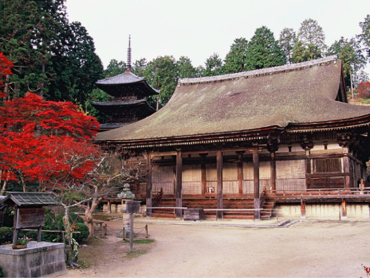
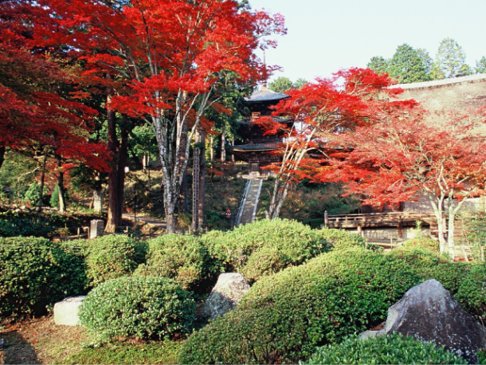
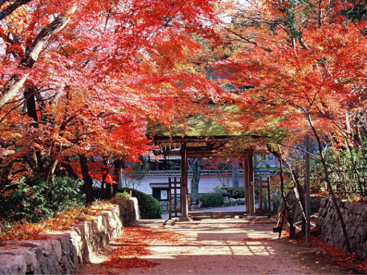
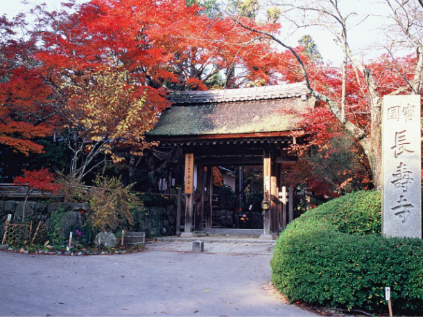
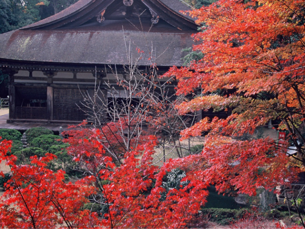
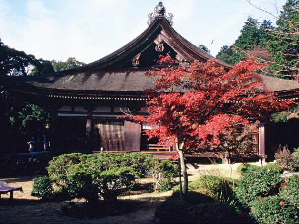

最新の情報は 公式サイトのツアーページ をご覧ください。
タクシーでめぐる 湖南三山送迎ツアー ～混雑回避でスムーズ観光～
※大人・子ども同額
※旅行代金には拝観料は含まれておりません。
当日、直接お寺にお納めください。（拝観料（各寺）大人600円）
※1～3名様での貸切も可能です（22,000円／台）。車種の指定不可。
※湖南三山紅葉めぐりの期間は、11/18(水)～12/6(日)となります。
| お申込み状況(最少催行人数4名) |
| 11/22 催行まであと１名 11/24 催行確定 11/25 催行確定 11/26 催行まであと２名11/27 催行確定 11/28 催行まであと２名 11/29 催行まであと２名 11/30 催行まであと３名 12/ 1 催行まであと２名 12/ 3 催行確定 12/6 催行確定 |
※最新のお申込み状況はお問い合わせください
秋色に染まる湖南三山へ。
善水寺・長寿寺・常楽寺、趣の異なる三つの古刹を、タクシーで効率よくめぐります。
紅葉シーズンは多くの人で賑わう人気スポットも、タクシーなら移動もスムーズ。
JR草津駅から3つのお寺をめぐり、各寺院では自由拝観をお楽しみいただけます。
「今年も紅葉を見に行きたい」…
そんな方にもおすすめの、毎年好評の秋の定番コースです。
今年はリクエストにお応えして、長寿寺の滞在時間を少し長く設定。
美しい紅葉を眺めながら、よりゆったりと境内を散策していただけます。
| 🍁湖南三山とは？ |
| 滋賀県湖南市にある「善水寺」「長寿寺」「常楽寺」の三つのお寺を総称して“湖南三山”と呼びます。 いずれも天台宗の古刹で、国宝指定の伽藍を有する歴史ある寺院。 秋になると境内が鮮やかな紅葉に彩られ、趣ある建物と美しい秋景色を楽しむことができます。 京都の紅葉名所とはひと味違う、ゆっくりと秋を感じられる“知る人ぞ知る”紅葉めぐりへ出かけてみませんか？ |
🍁湖南三山の見どころ
| 【善水寺（ぜんすいじ）】 |
| 「歴史を感じる、荘厳な秋」 1300年の歴史を誇る古刹・善水寺。国宝・本堂をはじめ、歴史ある建物が残る境内は、紅葉の季節になると一層趣深い雰囲気に。 色づく木々と古建築が織りなす、落ち着いた秋の景色をお楽しみください。 |
| 【長寿寺（ちょうじゅじ）】 |
| 「静かな境内で、紅葉をゆっくり」 秋の紅葉シーズンに特別公開される長寿寺。 こぢんまりとした境内を彩る紅葉は美しく、どこか隠れ里のような静けさを感じられるお寺です。 今年はご要望にお応えして、滞在時間を約50分に延長。 お気に入りの景色を探しながら、少しゆっくり秋の境内を歩いてみてください。 Instagram：chojyuji_official |
| 【常楽寺（じょうらくじ）】 |
| 「三重塔と紅葉の美しい競演」 広々とした境内には三重塔などの見どころがあり、紅葉との組み合わせはまるで一枚の絵のよう。 色鮮やかな木々に囲まれながら、秋の古寺をゆったりと散策できます。 |
行程
| 時間 | 場所 |
| 9:00 | JR草津駅 東口（集合・出発） |
| 9:30 | 善水寺 ＜自由拝観／約40分＞ |
| 10:40 | 長寿寺 ＜自由拝観／約50分＞ |
| 11:40 | 常楽寺 ＜自由拝観／約50分＞ |
| 13:00頃 | JR草津駅（解散） |
※渋滞等で予定通りの滞在時間をお取りすることができない場合がございます。予めご了承ください。
※気象状況により紅葉の見ごろは前後する場合があります。
※「常楽寺」…バリアフリーではありません。階段(本堂 12段、三重塔 35段等）があり、車椅子での入山は難しいです。
常楽寺


- （公社）びわこビジターズビューロー
長寿寺


- （公社）びわこビジターズビューロー
善水寺


- （公社）びわこビジターズビューロー
-
集合場所

【MKトラベルLINE公式アカウント】
MKトラベルの新規ツアー情報をLINEでお届けいたします

【各SNSでも京都の情報やツアー情報をお届けしています】


旅行条件
| ツアー番号 | T00001 |
| 出発地 | 草津市内 |
| 添乗員／ガイド | 添乗員：なし（乗務員がその業務を代行いたします） |
| 食事 | なし |
| 最少催行人数 | 4名 |
お申込みについてのご注意
※最少催行人数は4名様です。最少催行人員に満たない場合は、旅行の実施を取りやめることがあります。出発の3日前にその旨をご連絡し、お客様から当社がお預かりしている旅行費用の全額をお返しいたします。
※旅行条件・旅行代金は、2026年9月1日現在を基準としています。
※行程および帰着時間は交通事情などにより変更になる場合があります。
※お申込みの前に弊社の募集型企画旅行規約をご確認ください。
よくある質問
Q.1名ですが、申し込みできますか？
A.はい。お一人参加の方もたくさんいらっしゃいますので、お気軽にお申し込みください。
Q.参加したかったけど、日程が合いません／終了していました
A.貸切で再現できる場合もございますのでご相談ください。お問合せフォームはこちら
Q. 湖南三山（こなんさんざん）とは？
A.滋賀県湖南市にある3つの天台宗の寺院、「常楽寺」「長寿寺」「善水寺」の総称。三ヶ寺とも国宝の建造物や重要文化財を所有しています。紅葉の名所としても知られています。
Q. 湖南三山の紅葉の見頃はいつですか？
A.例年11月中旬～12月上旬が見ごろとなっております。本ツアーではまさにその見ごろの時期の湖南三山を巡ります。
Q. 湖南三山へのアクセス方法は？
3ヵ寺を徒歩のみで巡るのは難しいため、車または公共交通機関の利用が必須です。公共交通期間ですと、いずれもJRとバスを乗り継ぐ必要がございます。
初めて行く場所で不安な方、乗り継ぎ時に発生する待ち時間をなくしたい方、車をお持ちでない方はぜひ本ツアーをご利用ください。
＜お問合せフォームはこちら▶＞
＜MKトラベルTOPはこちら▶＞
＜おすすめツアー一覧はこちら▶＞
【お電話・ご来店でのご予約の場合】
・クレジットカード決済
・コンビニ決済【WEBシステムよりご予約の場合】
・クレジットカード決済
お支払方法詳細はこちら
お客様のご都合でご予約をキャンセルされる場合は、すみやかに下記お問合せ先までご連絡ください。
キャンセル料
11日目に当たる日以前
無料
10日目に当たる日以降
20%
7日目に当たる日以降
30%
旅行開始日の前日
40%
旅行開始日の当日
50%
旅行開始後又は無連絡
100%